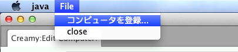
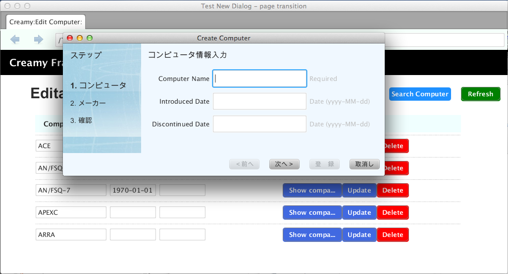

小画面の作成¶
デスクトップアプリケーションには少なくとも１つのウィンドウがありますが、多くの場合、機能を補う小画面を持っています。パッケージのインストーラのウィザード画面のように、その画面内でページ遷移が行われるものや、エラーメッセージを表示するだけの警告ダイアログなど、いくつか種類があります。ここでは、それら小画面を作成する方法を説明します。
提供する機能¶
Creamyで画面を作成する場合Creamy Browserを使います。小画面も同様です。アプリケーションのベースになる画面（親画面）にボタンやメニューを配置し、そのアクションとして小画面を生成します。
Creamyは、小画面を生成するためのメソッドを提供します。小画面と親画面とのActivityとしての関連を設定したり、ウィンドウの親子関係を設定するなどの細かな処理を隠蔽します。
小画面生成API
public Activity createWindow(String path, Modality modality)
第1引数が小画面のパスです。第2引数は小画面のModalityを設定します。Modalityについては、JavaFX API Documentのjavafx.stage.Modality を参照して下さい。 生成した小画面インスタンスを返します。
public static Activity createWindow(Browser ownerBrowser, String path, Modality modality)
第1引数は親browserのインスタンスです。親browserと小画面の親子関係を設定します。第2引数が小画面のパスです。第3引数は小画面のModalityを設定します。 生成した小画面インスタンスを返します。
記述方法¶
次の例は、アプリケーションメニューに小画面作成のサブメニューを追加したものです。
記述例１
1 2 3 4 5 6 7 8 9 10 11 12 13 | // メニューからダイアログを表示する
MenuItem item = new MenuItem("コンピュータを登録...");
item.setOnAction(new EventHandler<ActionEvent>() {
@Override
public void handle(ActionEvent t) {
// 新規ウィンドウを生成
Activity window = Activity.createWindow(
browser, "/WizardController/create", Modality.APPLICATION_MODAL);
}
});
// 'コンピュータを登録...' メニューを追加
menubar.getMenus().get(0).getItems().add(0, item);
primaryStage.show();
|
2行目で新しいMenuItemを作成し、そのアクションとしてEventHanderを生成しています。
7、8行目で小画面生成しています。Activity.createWindowメソッドの第１引数は、親browserのインスタンスを渡します。第2引数が小画面のパスです。コントローラクラスがWizardController、初期画面はCreate.java、Create.vm.fxmlファイルで構成されています。第3引数のModality.APPLICATION_MODALは、小画面をクローズするまで親画面を操作させない設定です。
実行例１
メニューから次の小画面を表示します。
上の例では、Modality.APPLICATION_MODALを指定しましたので、小画面をクローズするまで親画面とデータのやり取りをする必要がありませんでした。しかし、どちらも操作可能な状態でデータをやり取りし、再描画させる場合もあります。
次の例は、検索ウィンドウを生成する例です。検索実行後、検索結果を親画面に反映させています。
親画面のSearchComputerボタンをクリックすると、検索ウィンドウを表示します。検索条件を入力してSearchボタンをクリックすると、検索結果を親画面に表示します。
実行例２

記述例２
1 2 3 4 | @FXML private void search(ActionEvent event) {
// 検索画面を表示して、Searchなら続行、Cancelなら中断
Activity window = createWindow("/EditableController/search", Modality.NONE);
}
|
1行目は、Search Computerボタンのアクションメソッドです。
3行目で検索ウィンドウを生成しています。第2引数でModality.NONEを指定していますので、検索ウィンドウを表示している間も、親画面の操作ができます。
記述例１では、メニューから小画面を作成していましたので、親画面にあたるBrowserのインスタンスを指定しなければなりませんでしたが、記述例２では親画面にボタンが配置されているので、インスタンスを指定する必要がありません。